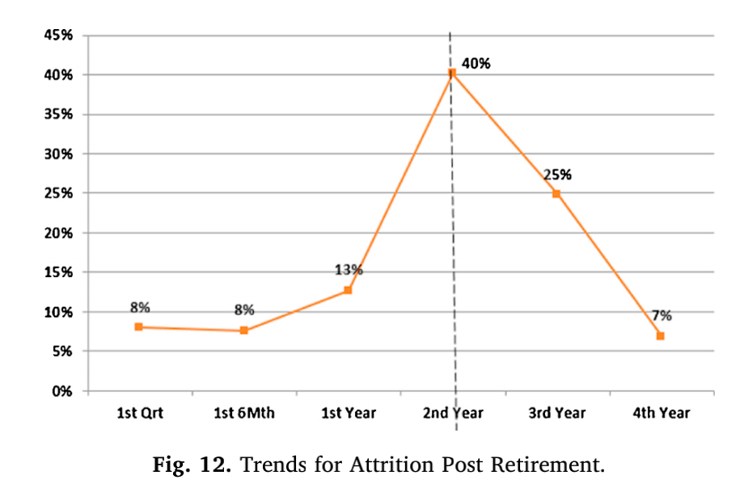

Predictive modeling refers to use statistics to predict outcomes.The holder usually wants to predict the trend or situation in the future, it, however, can be applied to any type of unknown event[1]. This model is used to predict the customer churn in retirement segment and identify the indicators of churn rate through Big Data analysis involving a data mining approach named Decision Tree such as Classfication and Regression Tree (CRT)[2].
Recently, resulting from the developing technology as well as the availability of various products and services, the changing options and expectations of customers have generated a highly competitive situation in the financial industry, including the threats and competition from direct competitors and new entrants.
The principal objective is to create a model to predict churn and discover the impact of individual behaviours from different aspects in this industry through big data analysis, which includes the integration of archival and unstructured data from websites, page views and phone records. It applied both the Datameer tool and the SAS business intelligence system to achieve the goal with more than 3 million information in the retiree section of the Canadian bank between 2011 and 2015.
In the contemporary society, because of the threats and disruption from competitors, the majority of incorporation consider the client retention rate as the most primary priority to maintain competitive advantages. Customer churn prediction, however, is one of the fundamentals of Customer Relationship Management (CRM) who sponsors new research to evaluate a variety of marketing solutions to maximize the retention rate. Additionally, the churn rate refers to the annual per cent of terminating the business relationship or ceasing the service.
Through the techniques of big data analysis in terms of decision tree and regression analysis, this research constructs a churn model for prediction fundamental on a dataset containing mass-affluent customers from retirement whose accuracy is beneficial to precise of retention activities in the future churners for companies. Besides, there are four different categories of clients in the model: churned, not churned, moderately churned and maintained customers, which assist to make a corresponding strategy to sustain customers.
1) The rate of attrition reaches the zenith after retirements between two years to three years. 
2) The churn rate can be significantly affected by both the length and strength of the banking correlation because the P-value is less than 0.0001.
3) Contrast to mass affluent clients, non-mass affluent customers agitate at a more rapid rate.
4) Neither the online purchase nor the page view has impacts on the rate of churn.
5) Due to the slight gap of the attrition rate between online customers and non-online clients, it can not be concluded that the behaviours on the internet result in a lower rate.
1) Both the frequency of visiting other websites and the historic period with the bank are indicatives of options to churn.
2) Compared with traditional churn prediction models, it improved the outcome by 175 per cent through the combination of CRT and linear regression analysis.
3) Based on the data analysis, the correlation between the behaviour of customers and churning decisions plays a significant role, which will cause more accurate prediction and identification of potential churners and then result in more successful strategies.
4) The mass-affluent customers are over two times to retire in the target bank but under two times to churn from it. Compared with mass retail, despite the lower rate of attrition, mass-affluent accounts for such a large proportion (a multi-billion dollar market) that affects considerably the profitability of the bank.
5) Since those who own longer occupation and tight relationships with the bank are more impossible to churn, the consolidation of the correlation will decrease the proportion of attrition.
2020 Writen by Molly Tong